1. Introducción
Dentro de los diferentes tipos de Bases de Datos NoSQL, las Bases de Datos Clave-Valor son las más fáciles de comprender. Este modelo se basa en pares clave-valor, donde cada clave representa un identificador único y su valor asociado.
Característica principal: La clave debe ser única, ya que de lo contrario no se podría recuperar correctamente la información.
Ventaja: No requiere definición de tablas ni estructuras complejas. Simplemente se almacenan pares clave-valor y se recupera la información mediante la clave correspondiente.
🔥 Redis: Un ejemplo de Base de Datos Clave-Valor
El ejemplo más conocido de este tipo de bases de datos es Redis, famoso por su potencia y eficiencia.
En Redis, las clavas siempre son de tipo String, mientras que los valores pueden ser de diferentes tipos:
Tipo de valores en Redis:
-
Cadenas de caracteres (String)
- Ejemplo: número_1 → "Albert"
-
Mapas (Hashes) (similares a un registro con subcampos)
- Ejemplo: empleado_1 → { número="Albert", departamento="10", sueldo="1000.0" }
-
Listas (Lists) (conjuntos ordenados de valores)
- Ejemplo: lista_1 → ["Primero", "Segundo", "Tercero"]
-
Conjuntos (Sets) (conjuntos desordenados de valores, el orden es imprevisible)
- Ejemplo: colores → {"Azul", "Verde", "Rojo"}
-
Conjuntos ordenados (Sorted Sets) (similares a los Sets, pero con orden definido)
- Se diferencia de las listas por la forma en que Redis gestiona la ordenación interna.
None
Características principales de Redis
🔹 Arquitectura Cliente-Servidor
Redis es un modelo cliente-servidor, donde múltiples clientes pueden conectarse a un servidor Redis para leer y escribir datos.
🔹 Alta eficiencia y velocidad
Redis es extraordinariamente rápido, especialmente cuando puede cargar toda la base de datos en memoria.
- Aunque prioriza la velocidad en memoria, también permite sincronización constante a disco para garantizar la persistencia de las datos.
🔹 Replicación Master-Slave por alta disponibilidad
- Para soportar altos volumenes de lectura, Redis permite replicación (master/slave).
- Un servidor actúa como master y los demás como slaves (réplicas del master).
- Los esclavos pueden gestionar consultas de lectura para reducir la carga sobre el master.
None
2.1 - Instalación de Redis
Redis está construido para Linux. También funciona, sin embargo, desde Windows como veremos un poquito más adelante.
🐧Instalación en Linux
El sitio desde donde descargarlo es la página oficial:
https://redis.io/docs/latest/operate/oss_and_stack/install/install-redis/install-redis-from-source/
En el momento de realizar estos apuntes, la última versió estable es la 7.4.1.
Para obtener los archivos fuente de la última versión estable de Redis desde el sitio de descargas de Redis, ejecute:
wget https://download.redis.io/redis-stable.tar.gz
Compilando Redis
Supondremos que el archivo está colocado en el sitio donde queremos que esté instalado de forma definitiva. Para compilar Redis, primero extrae el archivo tar, cambia al directorio raíz y después ejecuta make:
tar -xzvf redis-stable.tar.gz
cd redis-stable
make
Con esto deberían haberse generado los ejecutables, y ya debería funcionar.
Ejecutar Servidor y Cliente Redis
Para poner en marcha el servidor, casi lo más cómodo será abrir un terminal, situarnos en el directorio redis-stable/src y desde ahí ejecutar redis-server. Debería salir una ventana similar a la siguiente, con más o menos avisos (observe que al principio de la imagen están los comandos dados para ejecutar el servidor).
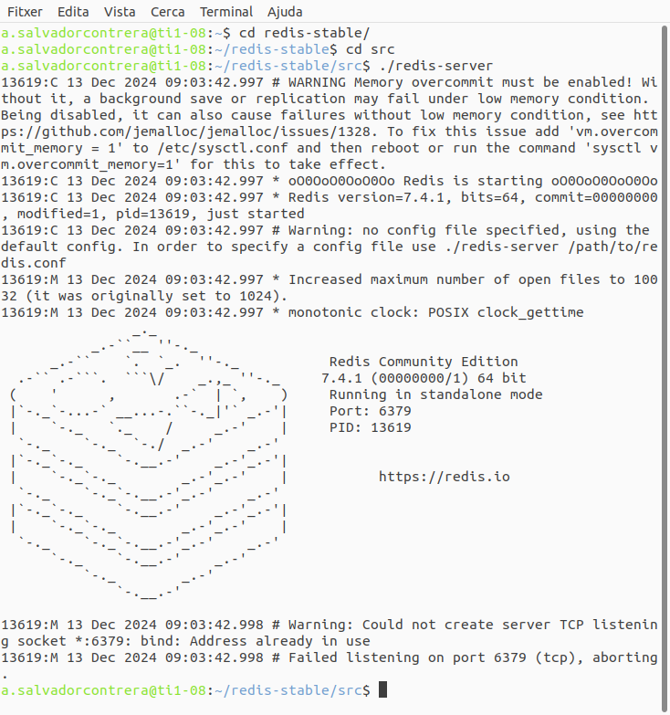
Entre otras cosas dice que el servidor está en marcha esperando conexiones al puerto 6379, que es el puerto por defecto de Redis. Esta ventana del terminal deberemos dejarlo en marcha. Cuando queramos detener a Redis, simplemente hacemos ctrl-c , y detendremos la ejecución de forma ordenada (guardándose las datos no guardadas)
Podríamos haber ejecutado directamente redis-server haciéndole doble-clic desde de un explorador de archivos, por ejemplo, pero entonces no podríamos pararlo y en definitiva controlarlo tan cómodamente.
Para realizar una conexión desde un cliente, también desde un terminal (otro) ejecutamos redis-cli :
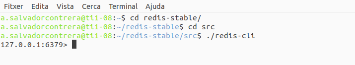
Ya ha realizado la conexión, concretamente a localhost (127.0.0.1) y al puerto 6379, que habíamos quedado en que es el puerto por defecto.
Comprobamos que sí funciona. Aunque no hay datos, porque acabamos de instalar. Y recuerdo que es una Base de Datos clave-valor. Para crear una entrada pondremos siete clave valor. Para obtenerla pondremos get clave. En la imagen se puede comprobar:
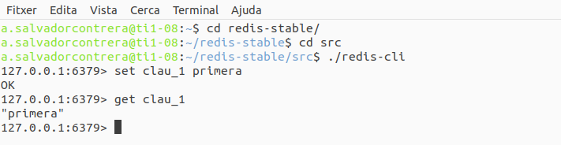
Hemos creado una clave llamada clave_1 con el valor primera , como se puede comprobar en el momento de obtenerla con get.
Conexión a un servidor Redis extern
Si en el programa redis-cli no le ponemos parámetros, intentará realizar una conexión local (localhost). Si queremos conectar a un servidor situado en una otra dirección, se la ponemos con el parámetro -h dirección , por ejemplo:
db.getCollection("authors").aggregate([{
$lookup: {
from: "books",
localField: "_id",
foreignField: "author_id",
as: "books"
}
}]);
Conexión al servidor del Instituto
En el servidor de datos del Instituto también tenemos instalado redios. Pero para no tener accesos no deseados, es necesaria una autenticación. Sencillamente se poner el comando auth con la contraseña que ya hemos utilizado en otras ocasiones: auth ieselcaminas.ad
En la siguiente imagen se viene cómo sí que hemos podido conectar
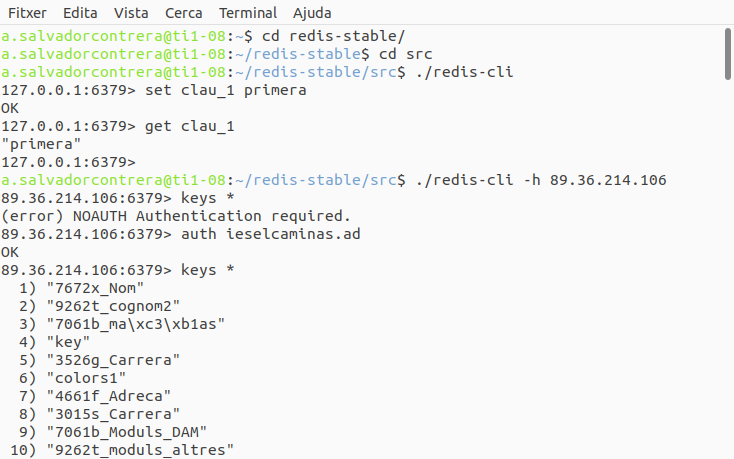
🖥️Instalación en Windows
Aunque Redis está construido para Linux, existen versiones para Windows, preferiblemente de 64 bits.
El lugar donde descargar los archivos de Redis para Windows de 64 bits es: https://github.com/MSOpenTech/redis/releases
Redis Insight está disponible para otros sistemas operativos.
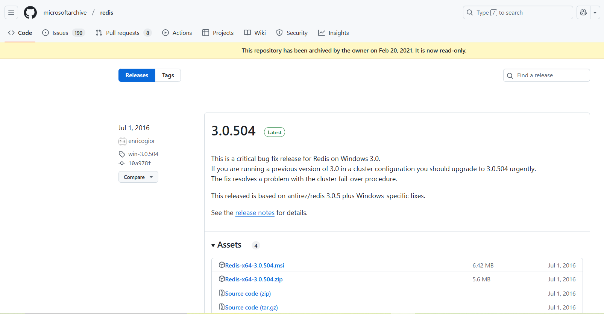
Nos bajamos el zip, lo descomprimimos, y ya lo tendremos disponible (sin hacer make ni nada). Observe cómo en la carpeta resultado de descomprimir ya tenemos los ejecutables redis-server y redis-cli que son los que nos interesan:
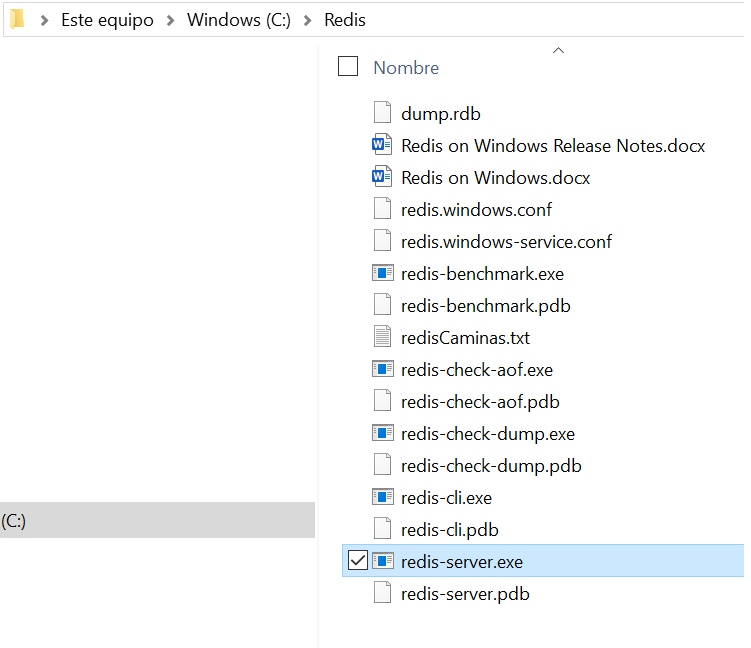
Ejecutamos redis-server directamente y ya lo tendremos en marcha:
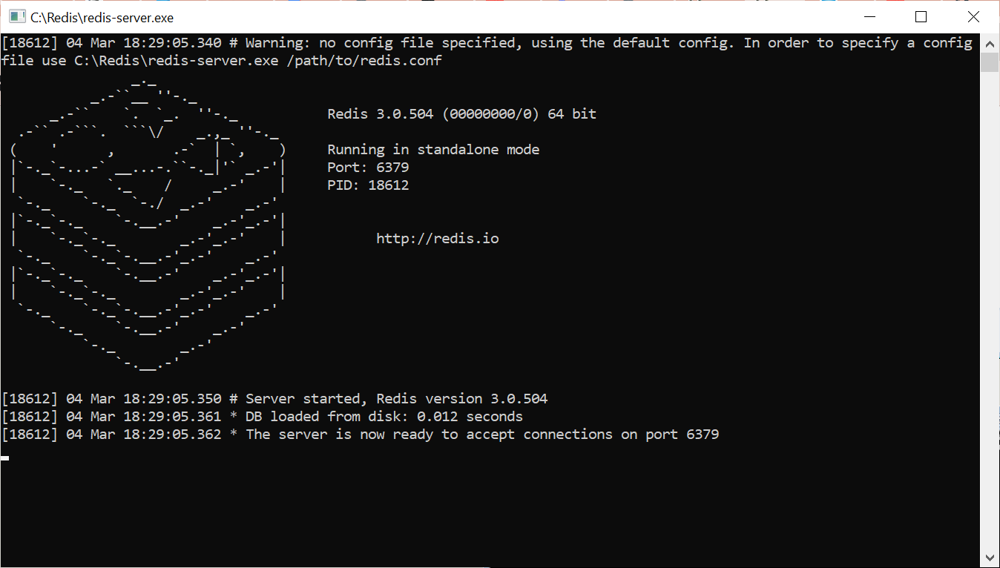
Ejecutamos también el redis-cli y el resultado será el mismo que en Linux.
2.2 - Entorno gráfico: Redis Insight
Como hemos comprobado en el punto anterior, la conexión que hacemos desde el cliente está en través de consola. Por tanto tendremos que poner comandos y nos contestará su ejecución.
Podemos instalarnos una aplicación gráfica que haga algo más atractiva la presentación.
La instalación de esta herramienta es totalmente optativa, no hace falta que la haga. De hecho, en los ejemplos que se mostrarán en todo el tema sólo se utilizará el modo consola.
Es completamente independiente del servidor, y podemos instalarla perfectamente sin tener el servidor, utilizándola entonces para conectar a un servidor remoto.
Lo podemos descargar libremente de la página oficial redis.io/insight donde podremos comprobar que tenemos para todas las plataformas:
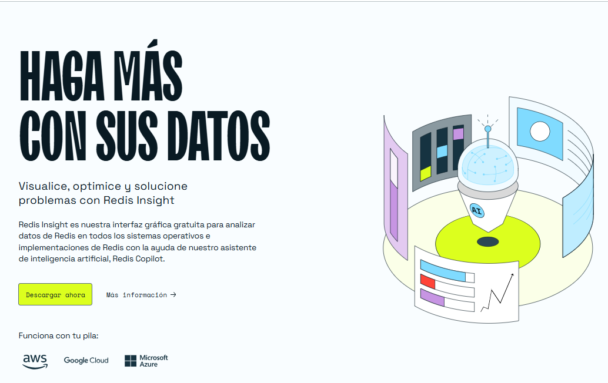
🖥️Instalación en Windows de 64 bits
En Windows lo que nos bajamos es un exe. La ejecutamos (permitiendo la ejecución cuando lo pregunta Windows) y podemos darle a todas las opciones por defecto.
Cuando lo ejecute, nos saldrá la siguiente pantalla:
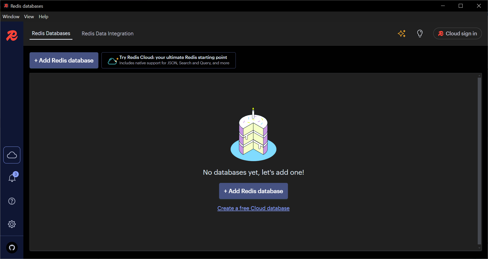
Podemos comprobar que tenemos el botón para añadir una BD Redis (+Add Redis database). Para conectar al servidor local la conexión será redis://default@127.0.0.1:6379. En la imagen se ha realizado el test de conexión.
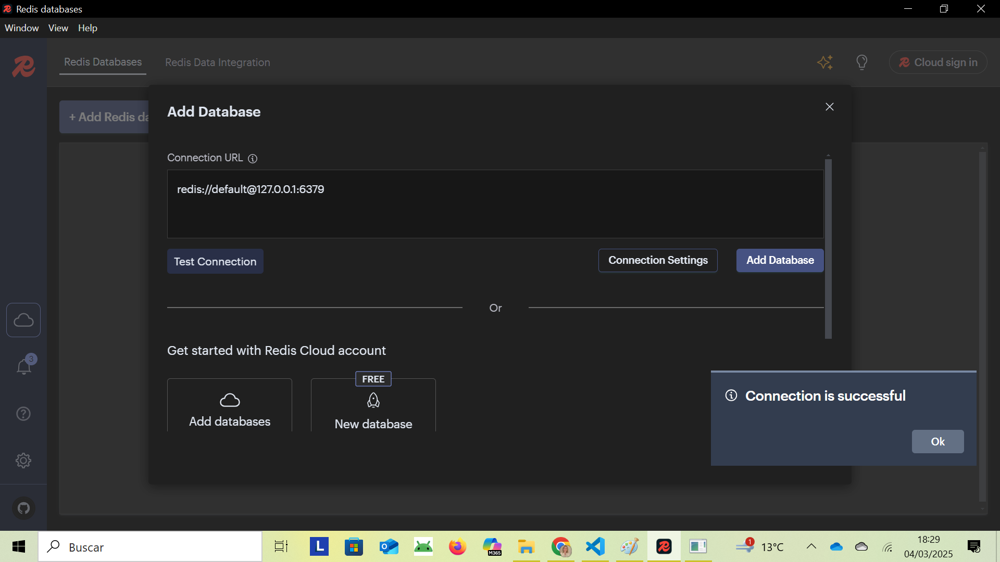
Para conectar a un remoto, pondremos su dirección.
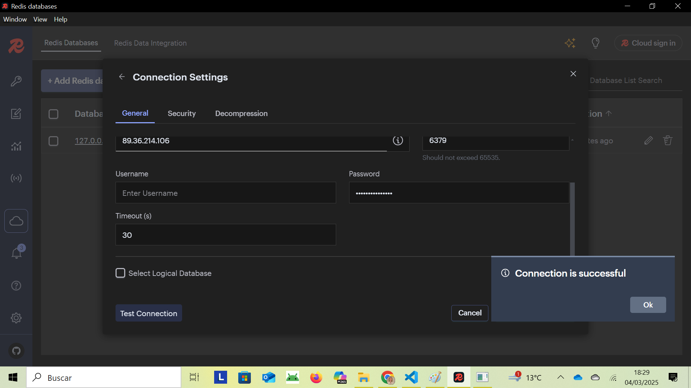
En esta imagen se viene cómo hemos conectado perfectamente a ambos servidores.
2.3 - Utilización de Redis
Vamos a ver la utilización de Redis, Nos conectaremos como clientes e intentaremos realizar operaciones.
- Las primeras serán las más sencillas, utilizando únicamente el tipo de datos String.
- Posteriormente miraremos cómo trabajar con las claves: buscar una, ver si existe, buscar unas cuantas, ...
- Después ya iremos a por los tipos de datos más complicados:
- Hash
- List
- Set
- Sorted Set
2.3.1 - Strings
Es el tipo de datos más sencillo, más básico. Será una cadena de caracteres de tipo binarysafe en la que normalmente guardaremos las habituales cadenas de caracteres, pero que también podríamos guardar imágenes u objetos serializados. El tamaño máximo es de 512Mb.
Ahora veremos los comandos más habituales que afectan a este tipo. Como norma general, debemos ser conscientes de que los comandos no son sensibles a mayúsculas o minúsculas, pero las claves y valores sí que lo son. Es decir, el comando get también se puede escribir GET o Get. Pero la clave Hola es diferente a la clave hola.
GET
Sintaxi
get clave
Devuelve el valor de la clave especificada, siempre que sea de tipo String. Si la clave es de otro tipo, dará error. Y si la clave no existe, volverá el valor especial nil .
Ejemplos
127.0.0.1:6379> get clave_1
"primera"
127.0.0.1:6379> get clave_2
(nil)
SET
Sintaxi
set clave valor
Asigna a la clave especificada como primer parámetro el valor especificado como a segundo parámetro. Si el valor consta de más de una palabra, deberá ir entre comillas dobles.
Redis siempre guardará el valor como string, aunque nosotros pensemos que le pasamos un valor entero o real.
Y otra característica es que si la clave existe ya, machacará el suyo contenido, como era de esperar.
Ejemplos
127.0.0.1:6379> set clau_2 segunda
OK
127.0.0.1:6379> set text "Un texto con más de una palabra"
OK
127.0.0.1:6379> siete cuatro 4
OK
127.0.0.1:6379> get cuatro
"4"
127.0.0.1:6379> siete pi 3.14159265359
OK
127.0.0.1:6379> get pi
"3.14159265359"
None
Nota
Si pone algún acento, al volver el valor (fent get) le parecerá que no se ha guardado bien. Sí se habrá guardado bien, lo que ocurre es que posteriormente no se visualiza bien al realizar el get. Se puede comprobar entrando en el cliente con la opción raw , es decir redis-cli --raw
El comando SET tiene una opción muy interesante, que servirá para dar un tiempo de vida en la clave, transcurrido el cual desaparece la clave (con el suyo valor claro). Esto se llama tiempo de expiración y se consigue con el parámetro EX del comando SET seguido del número de segundos que queremos que dure la llave.
Ejemplos
127.0.0.1:6379> set clave_3 tercera ex 10
OK
127.0.0.1:6379> get clave_3
"tercera"
127.0.0.1:6379> get clave_3
(nil)
Primero sí existe, pero al cabo de 10 segundos ha dejado de existir.
De forma equivalente se puede expresar el tiempo en milisegundos, con el parámetro PX en lugar de EX.
Habíamos comentado al principio, que si en el momento de hacer el SET la clave ya existía, se reemplazará su contenido. Podemos modificar este comportamiento con el parámetro NX (Not eXists): si no existía la clave, la creará con el valor, pero si ya existía, la dejará como estaba. Nos lo indicará diciendo OK en en caso de crearla y NIL en caso de no crearla porque ya existía.
127.0.0.1:6379> set clave_4 cuarta nx
OK
127.0.0.1:6379> set clave_1 cuarta nx
(nil)
127.0.0.1:6379> get clave_4
"cuarta"
127.0.0.1:6379> get clave_1
"primera"
Y de forma inversa, si ponemos el parámetro XX , si ya existe la clave, reemplazará el valor, pero si no existía, no hará nada.
SETEX
Sintaxi
setex clave según valor
Funciona igual que el SET con el parámetro EX : creará la clave con el pero tendrá una existencia de los segundos indicados.
{ "x" : null }
Sintaxi
psetex clave milisegundos valor
Funciona igual que el anterior, pero lo que especificamos son los milisegundos de existencia.
MGET
Sintaxi
mget clave1 clave2 claveN
Devuelve una lista de valores, los de las claves indicadas.
Ejemplos
127.0.0.1:6379> siete mes1 enero
OK
127.0.0.1:6379> siete mes2 febrero
OK
127.0.0.1:6379> sep mes3 marzo
OK
127.0.0.1:6379> mget mes1 mes2 mes3
1) "enero"
2) "febrero"
3) "mar\xc3\xa7"
Nota
Recuerde que los caracteres como vocales acentuadas, ç, ñ, ... se han introducido bueno, pero puede que no se visualicen bien. Se puede evitar entrando en el cliente de este modo redis-cli --raw
Si alguna de las claves no existe, volverá nil en su sitio
MSET
Sintaxi
mset clave1 valor1 clave2 valor2 claveN valorN
Asigna los valores correspondiente a las claves. Es una operación atómica: se ponen (o cambian) todos los valores a la vez.
127.0.0.1:6379> mset mes4 abril mes5 mayo mes6 junio mes7 julio
OK
127.0.0.1:6379> mget mes1 mes2 mes3 mes4 mes5 mes6 mes7
1) "enero"
2) "febrero"
3) "mar\xc3\xa7"
4) "abril"
5) "mayo"
6) "junio"
7) "julio"
Si no quisiéramos reemplazar valores, podríamos utilizar el comando MSETNX , totalmente equivalente, pero deberíamos tener en cuenta que si alguna ya existe y por tanto no puede cambiar el valor, no haría la operación, es decir, tampoco crearía las demás.
{ x : "Hola, ¿qué tal?"}
Sintaxi
append clave1 valor1
Si la clave no existe la crea asignándole el valor (como el SET), pero si ya existe, concatena el valor al final de la cadena que ya existía.
127.0.0.1:6379> append saludo Hola
(integer) 4
127.0.0.1:6379> get saludacio
"Hola"
127.0.0.1:6379> append saludo ", ¿cómo va?"
(integer) 13
127.0.0.1:6379> get saludacio
"Hola, ¿cómo va?"
STRLEN
Sintaxi
strlen clave1
Devuelve el número de caracteres que hay en el valor de la clave. Si la clave no existe, volverá 0. Si la clave es de otro tipo, volverá error.
127.0.0.1:6379> strlen saludo
(integer) 13
127.0.0.1:6379> strlen sal
(integer) 0
GETRANGE
Sintaxi
getrange clave1 inicio final
Extrae una subcadena del valor de la clave (debe ser de tipo String) desde del número de carácter de inicio hasta el número del final (ambos inclusive). El primer carácter es el 0. Si ponemos de final un número mayor que el último, igual lo sacará hasta el final.
Se pueden poner también valor negativos que nos ayudan a tomar la cadena desde el final. El -1 es el último carácter, el -2 el penúltimo,... Y se pueden mezclar números positivos y negativos. Así el rango 0-1 es toda la cadena.
127.0.0.1:6379> getrange saludo 1 3
"ola"
127.0.0.1:6379> getrange saludo 6 50
"cómo va?"
127.0.0.1:6379> getrange saludo 6 -1
"cómo va?"
127.0.0.1:6379> getrange saludo -7 -5
"cómo"
SETRANGE
Sintaxi
setrange clave1 desplazamiento valor
Sustituye parte del valor de la cadena, a partir del desplazamiento, con el valor proporcionado. No se admiten en desplazamiento valores negativos.
127.0.0.1:6379> get saludacio
"Hola, ¿cómo va?"
127.0.0.1:6379> setrange saludo 4 ". C"
(integer) 13
127.0.0.1:6379> get saludacio
"Hola. ¿Cómo va?"
INCR
Sintaxi
incr clave1
A pesar de que Redis guarda los strings como tales, como cadenas de caracteres, en algunas ocasiones es capaz de transformar la cadena a un número. Es el caso del comando INCR , que convierte la cadena en un entero (si puede) e incrementa este valor en una unidad.
Si la clave no existe la crea asumiendo que valía 0, y luego después valdrá 1.
Si el valor de la clave no era un número entero, dará un error.
127.0.0.1:6379> sept cont1 20
OK
127.0.0.1:6379> get compt1
"20"
127.0.0.1:6379> incr compt1
(integer) 21
127.0.0.1:6379> get compt1
"21"
127.0.0.1:6379> incr compt2
(integer) 1
127.0.0.1:6379> get compt2
"1"
127.0.0.1:6379> incr clave_1
(error) ERR value no está integrado or out of range
127.0.0.1:6379> set compt3 4.25
OK
127.0.0.1:6379> incr compt3
(error) ERR value no está integrado or out of range
DECR
Sintaxi
decr clave1
Decrementa en una unidad el valor de la clave (siempre que sea un entero).
Puede tomar valores negativos.
Si la clave no existe la crea asumiendo que valía 0, y luego después valdrá -1.
127.0.0.1:6379> decr compt2
(integer) 0
127.0.0.1:6379> decr compt2
(integer) -1
127.0.0.1:6379> get compt2
"-1"
INCRBY
Sintaxi
incrby clave1 incremento
Incrementa el valor de la clave en el número de unidades indicado en increment (el valor debe ser entero). El incremento puede ser negativo.
127.0.0.1:6379> incrby compt1 10
(integer) 31
127.0.0.1:6379> incrby compt1 -20
(integer) 11
DECRBY
Sintaxi
decrby clave1 decremento
Decrementa el valor de la clave el número de unidad indicado en decremento.
127.0.0.1:6379> decrby compt1 5
(integer) 6
2.3.2 - Keys
Ahora vamos a ver comandos que nos permiten trabajar con las claves, para buscarlas, ver si existen, etc. No importará el tipo de las claves (de momento sólo hemos trabajado con claves de tipo String, pero si ya en tuvimos de los otros tipos también se verían afectadas). En ningún caso de éstos comandos accederemos al valor de las claves.
KEYS
Sintaxi
keys patrón
Devuelve todas las claves que coinciden con el patrón. En el patrón podemos poner caracteres comodín:
- * : equivale a 0 o más caracteres. Por ejemplo "Mar*a" podría volver "Mara", "María", "Marta", "Margarita", ...
- ? : equivale exactamente a un carácter. Por ejemplo "Mara" podría volver "María" o "Marta", pero no "Mara", "Margarita", ...
- [ab] : será cierto si en el lugar correspondiente hay uno de los caracteres especificados entre los corchetes. Por ejemplo "Mar[it]a" podría volver "María" o "Marta", pero no "Marga"
Para volver todas las claves utilizaremos **keys ***
127.0.0.1:6379> keys *
1) "cont3"
2) "mes5"
3) "mes3"
4) "comp3"
5) "mes7"
6) "mes2"
1) "mes6"
2) "salutación"
3) "mes4"
4) "mes1"
5) "clave_1"
6) "cont1"
7) "cont2"
127.0.0.1:6379> ¿keys mas?
1) "mes5"
2) "mes3"
3) "mes7"
4) "mes2"
5) "mes6"
6) "mes4"
7) "mes1"
127.0.0.1:6379> keys c*
1) "cont3"
2) "comp3"
3) "clave_1"
4) "cont1"
5) "cont2"
127.0.0.1:6379> keys mes[125]
1) "mes5"
2) "mes2"
3) "mes1"
EXISTOS
Sintaxi
exists clave
Devuelve 1 si la clave existe, y 0 si no existe. No importa de qué tipo sea la clave.
127.0.0.1:6379> exists clave_1
(integer) 1
127.0.0.1:6379> exists clave_25
(integer) 0
DEL
Sintaxi
del clave1 clave2 claveN
Elimina la clave o claves especificadas. Si ponemos más de una llave y alguna no existe, la ignorará y sí borrará a las demás.
127.0.0.1:6379> del cont2
(integer) 1
127.0.0.1:6379> del mes6 mes7 mes8 mes9
(integer) 2
Observe que nos indica cuántas claves ha borrado. En el primer ejemplo debe borrado la clave especificada, y en el segundo dice que ha borrado 2, que serán mes6 y mes7 , ya que mes8 y mes9 no existían.
TYPE
Sintaxi
type clave
Devuelve el tipo de la clave especificada. Los valores posibles son:
- string
- hash
- list
- sed
- zset (conjunto ordenado)
Ejemplos
127.0.0.1:6379> type clau_1
string
RENAME
Sintaxi
rename clave novaclave
Cambia el número de la clave en la clave nueva, conservando el valor. Da error si la clave antigua no existe. Si la clave nueva ya existía reemplazará su valor.
Ejemplos
127.0.0.1:6379> get saludacio
"Hola. ¿Cómo va?"
127.0.0.1:6379> rename saludo saludar
OK
127.0.0.1:6379> get saludacio
(nil)
127.0.0.1:6379> get saludar
"Hola. ¿Cómo va?"
127.0.0.1:6379> rename clave_22 clave_23
(error) ERR no such key
RENAMENX
Sintaxi
renamenx clave nueva clave
Al igual que el anterior pero únicamente si la clave nueva no existía. Si ya existía no hace nada (volviendo 0 para indicarlo h0).
- db.collection.find()
recuperará todos los documentos de la colección, aunque podremos poner criterios para que nos devuelva todos los documentos que cumplan estos criterios (lo veremos más adelante).
127.0.0.1:6379> renamenx compt1 compt3
(integer) 0
127.0.0.1:6379> get compt1
"9"
Estamos suponiendo que la clave compt3 ya existe
EXPIRE
Sintaxi
caducar segundos clave
Asigna como tiempo de expiración de la clave los segundos especificados. Si ya tenía tiempo de expiración, lo modifica poniéndole ese valor especificado.
En caso de que en una clave con tiempo de expiración le cambiemos el número con RENAME , continuará con tiempo de expiración que le quedaba.
PEXPIRE
Sintaxi
pexpire clave milisegundos
Lo mismo pero en milisegundos
TTL
Sintaxi
ttl clave
Vuelve el tiempo de vida (hasta la expiración) de una clave. Si la clave no tiene tiempo de expiración, vuelve -1.
Ejemplos
127.0.0.1:6379> expire compt3 10
(integer) 1
127.0.0.1:6379> ttl compt3
(integer) 6
127.0.0.1:6379> ttl compt3
(integer) 3
127.0.0.1:6379> ttl compt3
(integer) 0
127.0.0.1:6379> get compt3
(nil)
PTTL
Sintaxi
pttl clave
Al igual que el anterior, pero nos devuelve el tiempo en milisegundos.
PERSIST
Sintaxi
persisto clave
Elimina el tiempo de expiración de una llave, si es que la tenía. Ahora la clave no expirará nunca.
Ejemplos
127.0.0.1:6379> expire cont1 20
(integer) 1
127.0.0.1:6379> ttl compt1
(integer) 12
127.0.0.1:6379> ttl compt1
(integer) 7
127.0.0.1:6379> persist compt1
(integer) 1
127.0.0.1:6379> ttl compt1
(integer) -1
127.0.0.1:6379> get compt1
"9"
2.3.3 - Hash
Ya habíamos comentado que el tipo Hash es una especie de registro, como subcampos (en realidad deberíamos llamar subclaves). Puede tener cualquier número de subcampos que son de tipo String.
Redis es muy eficiente en cuanto al espacio que ocupan los Hash , y sobre todo en el tiempo de recuperación de las datos.
Los comandos que vimos para String no se pueden aplicar al Hash. Sin embargo los comandos del Hash son muy similares a aquellos, empezando siempre por H.
HSET
Sintaxi
hset clave campo valor
Asigna al campo especificado de la clave especificada el valor especificado. Si el valor consta de más de una palabra, deberá ir entre comillas dobles.
Si la clave no existía, la creará, y si ya existía, sencillamente añadirá el campo. Y si de esa clave ya existía el campo, modificará su valor.
Evidentemente, en claves diferentes puede haber campos con los mismos números.
Ejemplos
127.0.0.1:6379> hset empleado_1 número Andrés
(integer) 1
127.0.0.1:6379> hset empleado_1 departamento 10
(integer) 1
127.0.0.1:6379> hset empleado_1 sueldo 1000.0
(integer) 1
127.0.0.1:6379> hset empleado_2 número Berta
(integer) 1
127.0.0.1:6379> hset empleado_2 sueldo 1500.0
(integer) 1
HGET
Sintaxi
hget clave campo
Devuelve el valor del campo de la clave. Si no existía (el campo o la clave) vuelve nil. Sólo podemos especificar un campo.
Ejemplos
127.0.0.1:6379> hget empleado_1 número
"Andreu"
127.0.0.1:6379> hget empleado_1 departamento
"10"
127.0.0.1:6379> hget empleado_2 número
"Berta"
127.0.0.1:6379> hget empleado_2 departamento
(nil)
HGETAL
Sintaxi
hgetall clave
Devuelve una lista con todos los campos y sus valores de la clave. La secuencia es: campo1 valor1 campo2 valor2 ... Pero no podemos fiarnos de que el orden sea el mismo orden que cuando lo definimos.
Ejemplos
127.0.0.1:6379> hgetall empleado_1
1) "número"
2) "Andreu"
3) "departamento"
4) "10"
5) "sueldo"
6) "1000.0"
HDEL
Sintaxi
hdel clave camp1 camp2 campN
Elimina el o los campos especificados. Si no existen alguno de ellos, sencillamente lo ignora y si que elimina a los demás.
Ejemplos
127.0.0.1:6379> hdel empleado_1 departamento
(integer) 1
127.0.0.1:6379> hgetall empleado_1
1) "número"
2) "Andreu"
3) "sueldo"
4) "1000.0"
HKEYS
Sintaxi
hkeys clave
Devuelve una lista con los campos de la clave. Si la clave no existía, devuelve una lista vacía
Ejemplos
127.0.0.1:6379> hkeys empleado_1
1) "número"
2) "sueldo"
HVALS
Sintaxi
hvales clave
Vuelve una lista con los valores (únicamente los valores) de todos los campos de la clave. Si la clave no existía, devuelve una lista vacía
Ejemplos
127.0.0.1:6379> hvals empleado_1
1) "Andreu"
2) "1000.0"
Otros Comandos
También existen otros comandos, de funcionamiento como cabría esperar (los hemos visto todos en el caso de String):
- hmget : Vuelve más de un campo de la clave
- hmset : asigna más de un campo a una clave
- hexists : indica si existe el subcampo de la clave
- hsetnx : asigna únicamente en caso de que no exista el campo.
- hincrby : incrementa el campo de la clave
2.3.4 - Lista
Las Listas en Redis son listas de Strings ordenadas, donde cada elemento está asociado a un índice de la lista. Se pueden recuperar los elementos tanto de forma ordenada (por el índice) como accediendo directamente a una posición.
-
Los elementos se pueden añadir al principio, al final o también en una posición determinada.
-
La lista se crea en el momento en que se inserta el primer elemento, y desaparece cuando levantamos el último elemento que quede.
-
Están muy bien optimizadas para la inserción y consulta.
-
Los comandos que afectan a las listas comienzan casi todos por L, excepto algunos que comienzan por R indicando que realizan la operación por la derecha.
-
Los valores de los elementos se pueden repetir.
LPUSH
Sintaxi
lpush clave valor1 valor2 valorN
Introduce los valores en la lista (creando la clave si es necesario). Las inserta en la primera posición, o también podríamos decir que por la izquierda (Left PUSH), imaginando que los elementos están ordenados de izquierda a derecha. Si ponemos más de un valor, se irán introduciendo siempre en la primera posición. El comando volverá el número de elementos (strings) de la lista después de la inserción.
Ejemplos
127.0.0.1:6379> lpush list1 primer segundo tercero
(entero) 3
127.0.0.1:6379> lista de rangos1 0 -1
1) "tercero"
2) "segundo"
3) "primero"
127.0.0.1:6379> lpush list1 cuarto quinto
(entero) 5
127.0.0.1:6379> lista de rangos1 0 -1
1) "cinco"
2) "cuarto"
3) "tercero"
4) "segundo"
5) "primero"
Nota
Para ver el contenido de la lista utilizaremos el comando lrange list 0 -1, que devuelve la lista completa. Analizaremos más a fondo éste. comando más tarde.
RPUSH
Sintaxi
rpush clave valor1 valor2 valorN
Introduce los valores en la lista (creando la clave si es necesario). Las inserta en la última posición, o también podríamos decir que por la derecha (Right PUSH), imaginando que los elementos están ordenados de izquierda a derecha. El comando volverá el número de elementos (strings) de la lista después de la inserción.
Ejemplos
127.0.0.1:6379> rpush lista1 sexta séptima
(integer) 7
127.0.0.1:6379> lange lista1 0 -1
1) "quinta"
2) "cuarta"
3) "tercera"
4) "segunda"
5) "primera"
6) "sexta"
7) "séptima"
LPOP
Sintaxi
lpop clave
Vuelve y elimina el primer elemento (el de más a la izquierda).
Ejemplos
127.0.0.1:6379> lista lpop1
"cinco"
127.0.0.1:6379> lista de rangos1 0 -1
1) "cuarto"
2) "tercero"
3) "segundo"
4) "primero"
5) "sexto"
6) "séptimo"
RPOP
Sintaxi
rpop clave
Vuelve y elimina el último elemento (el de más a la derecha).
Ejemplos
127.0.0.1:6379> rpop lista1
"séptima"
127.0.0.1:6379> lange lista1 0 -1
1) "cuarta"
2) "tercera"
3) "segunda"
4) "primera"
5) "sexta"
LSET
Sintaxi
lset clave índice valor
Sustituye el valor de la posición indicada por el índice. Tanto la clave como el elemento de la posición indicada deben existir, sino dará error. Ahora la L no significa Left sino List.
La primera posición es la 0. Y también se pueden poner números negativos: -1 es el último, -2 el penúltimo, ...
Ejemplos
127.0.0.1:6379> lset lista1 2 cuarta
OK
127.0.0.1:6379> lange lista1 0 -1
1) "cuarta"
2) "tercera"
3) "cuarta"
4) "primera"
5) "sexta"
127.0.0.1:6379> lset lista1 -1 quinta
OK
127.0.0.1:6379> lange lista1 0 -1
1) "cuarta"
2) "tercera"
3) "cuarta"
4) "primera"
5) "quinta"
Observe cómo se pueden repetir los valores
LÍNDICE
Sintaxi
elindex clave índice
Vuelve el elemento situado en la posición indicada por el índice, pero sin eliminarlo de la lista.
Ejemplos
127.0.0.1:6379> lange lista1 0 -1
1) "cuarta"
2) "tercera"
3) "cuarta"
4) "primera"
5) "quinta"
127.0.0.1:6379> lindex lista1 0
"cuarta"
127.0.0.1:6379> lindex lista1 3
"primera"
127.0.0.1:6379> lindex lista1 -1
"quinta"
127.0.0.1:6379> lange lista1 0 -1
1) "cuarta"
2) "tercera"
3) "cuarta"
4) "primera"
5) "quinta"
LINSERT
Sintaxi
inserto clave BEFORE | AFTER valor1 valor2
Inserta el valor2 antes o después (según lo que elegimos) de la primera vez que encuentra el valor1. No sustituye, sino que inserta en una determinada posición. Los elementos que van después del elemento introducido verán actualizado su índice.
Ejemplos
127.0.0.1:6379> lange lista1 0 -1
1) "cuarta"
2) "tercera"
3) "cuarta"
4) "primera"
5) "quinta"
127.0.0.1:6379> linsert lista1 AFTER cuarta segunda
(integer) 6
127.0.0.1:6379> lange lista1 0 -1
1) "cuarta"
2) "segunda"
3) "tercera"
4) "cuarta"
5) "primera"
6) "quinta"
127.0.0.1:6379> linsert lista1 BEFORE quinta sexta
(integer) 7
127.0.0.1:6379> lange lista1 0 -1
1) "cuarta"
2) "segunda"
3) "tercera"
4) "cuarta"
5) "primera"
6) "sexta"
7) "quinta"
127.0.0.1:6379> lange lista1 0 -1
Si intentamos insertar antes o después un elemento que no existe, volverá -1 indicando que no lo ha encontrado y no realizará la inserción.
127.0.0.1:6379> linsert lista1 BEFORE décima séptima
(integer) -1
127.0.0.1:6379> lange lista1 0 -1
1) "cuarta"
2) "segunda"
3) "tercera"
4) "cuarta"
5) "primera"
6) "sexta"
7) "quinta"
LRANGE
Sintaxi
larange clave inicio final
Devuelve los elementos de la lista incluidos entre los índices inicio y final, ambos incluidos. El primer elemento es el 0. Se pueden poner valores negativos, siendo -1 el último, -2 el penúltimo, ...
Ejemplos
127.0.0.1:6379> lange lista1 0 -1
1) "cuarta"
2) "segunda"
3) "tercera"
4) "cuarta"
5) "primera"
6) "sexta"
7) "quinta"
127.0.0.1:6379> lrange lista1 2 4
1) "tercera"
2) "cuarta"
3) "primera"
127.0.0.1:6379> lrange lista1 1 -2
4) "segunda"
5) "tercera"
6) "cuarta"
7) "primera"
8) "sexta"
127.0.0.1:6379> lrange lista1 4 4
1) "primera"
LEN
Sintaxi
tiran clave
Devuelve el número de elementos de la lista
Ejemplos
127.0.0.1:6379> llen llista1
(integer) 7
LREM
Sintaxi
lrem clave número valor
Elimina elementos de la lista que coincidan con el valor proporcionado. Ya sabemos que los valores pueden repetirse. Con el número indicamos cuántos elementos queremos que se borren empezando por la izquierda: si ponemos 1 se borrará el primero elemento con este valor, si ponemos 2 se borrarán los dos primeros elementos (los de más a la izquierda) que tengan ese valor. Si ponemos 0 se borrarán todos los elementos con este valor
Ejemplos
127.0.0.1:6379> rpush lista1 segunda
(integer) 8
127.0.0.1:6379> lange lista1 0 -1
1) "cuarta"
2) "segunda"
3) "tercera"
4) "cuarta"
5) "primera"
6) "sexta"
7) "quinta"
8) "segunda"
127.0.0.1:6379> lrem lista1 1 segunda
(integer) 1
127.0.0.1:6379> lange lista1 0 -1
1) "cuarta"
2) "tercera"
3) "cuarta"
4) "primera"
5) "sexta"
6) "quinta"
7) "segunda"
127.0.0.1:6379> lrem lista1 0 cuarta
(integer) 2
127.0.0.1:6379> lange lista1 0 -1
8) "tercera"
9) "primera"
10) "sexta"
11) "quinta"
12) "segunda"
LTRIM
Sintaxi
ltrim clave inicio final
Elimina los elementos que quedan fuera de los índices inicio y final, es decir elimina los que extiende a la izquierda de inicio, y los que extiende a la derecha de final.
Ejemplos
127.0.0.1:6379> ltrim lista1 1 -2
OK
127.0.0.1:6379> lange lista1 0 -1
1) "primera"
2) "sexta"
3) "quinta"
2.3.5 - Siete
Los Sets de Redis son conjuntos de valores de tipo String no ordenados. Podremos añadir, actualizar y borrar estos elementos de forma cómoda y eficiente. No se permitirán valores duplicados.
Además Redis nos ofrece operaciones interesantes como la unión, intersección y diferencia de conjuntos.
Como siempre, los comandos son específicos, es decir no nos valen los de Strings, List o Hash. Todos los comandos comienzan por S.
SADD
Sintaxi
sadd clave valor1 valor2 valorN
Añade los valores al conjunto (creando la clave si es necesario). Recordemos que el orden no es importante, y que no se pueden repetir los valores; si intentamos introducir un repetido, no dará error, pero no lo introducirá. El comando volverá el número de elementos que realmente se han añadido.
Ejemplos
127.0.0.1:6379> colores tristes rojo verde azul
(entero) 3
127.0.0.1:6379> colores tristes verde amarillo
(entero) 1
SMEMBERS
Sintaxi
smembers clave
Devuelve todos los valores del conjunto. Si la clave no existe, volverá un conjunto. vacío Recuerda que el orden de los elementos no es predictible
Ejemplos
127.0.0.1:6379> smembers colores
1) "amarillo"
2) "verde"
3) "rojo"
4) "azul"
SISMEMBER
Sintaxi
seísmo clave valor
Comprueba si el valor está en el conjunto, devolviendo 1 en caso afirmativo y 0 en caso negativo.
Ejemplos
127.0.0.1:6379> sismember colores verde
(integer) 1
127.0.0.1:6379> sismember colores negro
(integer) 0
SCARD
Sintaxi
sardo clave
Vuelve la cardinalidad, es decir, el número de elementos del conjunto en la actualidad.
Ejemplos
127.0.0.1:6379> scard colors
(integer) 4
Donde en posición podremos poner:
Sintaxi
seremos clave valor1 valor2 valorN
Elimina los valores del conjunto. Si el conjunto se queda vacío, eliminará la clave también. Si alguno de los valores no es ningún elemento del conjunto, sencillamente se ignorará. El comando devuelve el número de elementos realmente eliminado.
Ejemplos
127.0.0.1:6379> srem colores verde negro
(integer) 1
127.0.0.1:6379> smembers colores
1) "amarillo"
2) "rojo"
3) "azul"
SPOP
Sintaxi
spop clave
Vuelve y elimina un valor aleatorio del conjunto. Recuerde que además de volverlo lo, lo elimina del conjunto.
Ejemplos
127.0.0.1:6379> smembers colores
1) "amarillo"
2) "rojo"
3) "azul"
127.0.0.1:6379> spop colors
"amarillo"
127.0.0.1:6379> smembers colores
1) "rojo"
2) "azul"
SRANDMEMBER
Sintaxi
srandmember clave
Muy parecido a lo anterior. Vuelve un valor aleatorio del conjunto, pero en esta ocasión no le elimina del conjunto.
Ejemplos
127.0.0.1:6379> srandmember colores
"azul"
127.0.0.1:6379> smembers colores
1) "rojo"
2) "azul"
SUNION
Sintaxi
sunion clave1 clave2 claveN
Devuelve la unión de los elementos de los conjuntos especificados. Es una unión correcta, es decir, no se repetirá ningún valor.
No modifica ningún conjunto, y el resultado únicamente se devuelve, no se guarda en ningún puesto de forma permanente.
Ejemplos
127.0.0.1:6379> smembers colores
1) "rojo"
2) "azul"
127.0.0.1:6379> sadd colors1 verde rojo amarillo
(integer) 3
127.0.0.1:6379> smembers colors1
1) "amarillo"
2) "rojo"
3) "verde"
127.0.0.1:6379> sunion colores colores1
1) "verde"
2) "amarillo"
3) "rojo"
4) "azul"
SUNIONSTORE
Sintaxi
sunionstore clave_destino clave1 clave2 claveN
Al igual que el anterior, pero ahora sí se guarda el resultado de la unión en un conjunto, clave_destino (el primero especificado). Si la clave_destino ya existía, sustituirá el contenido.
Ejemplos
127.0.0.1:6379> smembers colores
1) "rojo"
2) "azul"
127.0.0.1:6379> smembers colors1
1) "amarillo"
2) "rojo"
3) "verde"
127.0.0.1:6379> sunionstore colores2 colores colores1
(integer) 4
127.0.0.1:6379> smembers colors2
1) "verde"
2) "amarillo"
3) "rojo"
4) "azul"
SDIFF
Sintaxi
sdiff clave1 clave2 claveN
Vuelve la diferencia de los elementos del primer conjunto respecto a la unión de todos los demás. Es decir, devuelve los elementos del primer conjunto que no pertenecen a ninguno de los demás.
No modifica ningún conjunto, y el resultado únicamente se devuelve, no se guarda en ningún puesto de forma permanente.
Ejemplos
127.0.0.1:6379> smembers colores
1) "rojo"
2) "azul"
127.0.0.1:6379> smembers colors1
1) "amarillo"
2) "rojo"
3) "verde"
127.0.0.1:6379> sdiff colors1 colores
1) "verde"
2) "amarillo"
SDIFFSTORE
Sintaxi
sdiffstore clave_destino clave1 clave2 claveN
Al igual que el anterior, pero ahora se guarda el resultado de la diferencia. en un conjunto, clave_destino (la primera especificada). Si la clave_destino ya existía, reemplazará el contenido.
Ejemplos
127.0.0.1:6379> smembers colores
1) "rojo"
2) "azul"
127.0.0.1:6379> smembers colors1
1) "amarillo"
2) "rojo"
3) "verde"
127.0.0.1:6379> sdiffstore colores3 colores1 colores
(integer) 2
127.0.0.1:6379> smembers colors3
1) "verde"
2) "amarillo"
SINTER
Sintaxi
sinter clave1 clave2 claveN
Devuelve la intersección de los elementos de los conjuntos. Es decir, devuelve los elementos que pertenecen a todos los conjuntos especificados.
No modifica ningún conjunto, y el resultado únicamente se devuelve, no se guarda en ningún puesto de forma permanente.
Ejemplos
127.0.0.1:6379> smembers colores
1) "rojo"
2) "azul"
127.0.0.1:6379> smembers colors1
1) "amarillo"
2) "rojo"
3) "verde"
127.0.0.1:6379> sinter colors colors1
1) "rojo"
SINTERSTORE
Sintaxi
sinterstore clave_destino clave1 clave2 claveN
Al igual que el anterior, pero ahora sí se guarda el resultado de la intersección en un conjunto, clave_destino (el primero especificado). Si la clave_destino ya existía, sustituirá el contenido.
Ejemplos
127.0.0.1:6379> smembers colores
1) "rojo"
2) "azul"
127.0.0.1:6379> smembers colors1
3) "amarillo"
4) "rojo"
5) "verde"
127.0.0.1:6379> sinterstore colors4 colores colores1
(integer) 1
127.0.0.1:6379> smembers colors4
6) "rojo"
SMOVE
Sintaxi
smove clave_fuente clave_destino valor
Maneja el valor del conjunto orígen (el primer conjunto) en el conjunto destino (el segundo). Esto supondrá eliminarlo del primero y añadirlo al segundo. Volverá 1 si lo ha mineado, y 0 si no lo ha meneado.
Ejemplos
127.0.0.1:6379> smembers colores
1) "rojo"
2) "azul"
127.0.0.1:6379> smembers colors1
1) "amarillo"
2) "rojo"
3) "verde"
127.0.0.1:6379> smove colors1 colores verde
(integer) 1
127.0.0.1:6379> smembers colores
1) "verde"
2) "rojo"
3) "azul"
127.0.0.1:6379> smembers colors1
1) "amarillo"
2) "rojo"
2.3.6 - Siete ordenado
Los Sets Ordenados (Sorted Set) de Redis son Sets que además de guardar los valores, guardan también una puntuación (score) para cada valor, y Redis mantendrá el conjunto ordenado por esta puntuación.
Los valores no podrán repetirse, pero sí las puntuaciones.
Muchos de los comandos serán iguales que los del Set, ya que un conjunto ordenado no deja de ser un conjunto pero con la información de la puntuación. En esta ocasión empezarán por Z
ZADD
Sintaxi
zadd clave puntuación1 valor1 puntuación2 valor2 puntuaciónN valorN
Añade los valores al conjunto (creando la clave si es necesario) con las puntuaciones correspondiente. Las puntuaciones serán Strings de valores reales (float). No se pueden repetir los valores, pero sí las puntuaciones. Si intentamos introducir un valor repetido, lo que va a hacer será actualizar la puntuación. El comando volverá el número de elementos que realmente se han añadido.
Ejemplos
127.0.0.1:6379> zadd puntuaciones 1 Número1 2 Número2 5 Número3 4 Número4
(integer) 4
127.0.0.1:6379> zrange puntuaciones 0 -1
1) "Número1"
2) "Número2"
3) "Número4"
4) "Número3"
ZCARD
Sintaxi
zcard clave
Vuelve la cardinalidad, es decir, el número de elementos del conjunto ordenado en la actualidad.
Ejemplos
127.0.0.1:6379> zcard puntuaciones
(integer) 4
ZSCORE
Sintaxi
zscore clave valor
Devuelve la puntuación (score) del valor especificado del conjunto ordenado. Si no existe el valor o no existe la clao, vuelve nilo.
Ejemplos
127.0.0.1:6379> zscore puntuaciones Número3
"5"
127.0.0.1:6379> zscore puntuaciones Número7
(nil)
ZCOUNT
Sintaxi
zcount clave min max
Devuelve el número de valores que están entre las puntuaciones especificadas (ambas incluidas).
Ejemplos
127.0.0.1:6379> zcount puntuaciones 2 5
(integer) 3
ZRANGE
Sintaxi
zrange clave inicio final [withscores]
Devuelve los elementos del conjunto ordenado incluidos entre los índices inicio y final, ambos incluidos. Y se sacan por orden acentente de puntuación. El primero elemento es el 0. Se pueden poner valores negativos, siendo -1 el último, -2 el penúltimo, ... Opcionalmente podemos poner WITHSCORES para que nos devuelva también la puntuación de cada elemento
$or
127.0.0.1:6379> zrange puntuaciones 0 -1
1) "Número1"
2) "Número2"
3) "Número4"
4) "Número3"
127.0.0.1:6379> zrange puntuaciones 0 -1 withscores
1) "Número1"
2) "1"
3) "Número2"
4) "2"
5) "Número4"
6) "4"
7) "Número3"
8) "5"
Si quisiéramos sacar el conjunto en orden inverso de puntuación, utilizaríamos el comando ZREVRANGE (reverse range).
127.0.0.1:6379> zrevrange puntuaciones 0 -1 withscores
1) "Número3"
2) "5"
3) "Número4"
4) "4"
5) "Número2"
6) "2"
7) "Número1"
8) "1"
ZRANGEBYSCORE
Sintaxi
zrangebyscore clave min max [withscores]
Vuelve los elementos del conjunto ordenado que tienen una puntuación comprendida entre min y max (ambas incluidas). Y se sacan por orden acentente de puntuación. Opcionalmente podemos poner WITHSCORES para que nos devuelva también la puntuación de cada elemento. ****
Ejemplos
127.0.0.1:6379> zrangebyscore puntuaciones 2 5
1) "Número2"
2) "Número4"
3) "Número3"
127.0.0.1:6379> zrangebyscore puntuaciones 2 5 withscores
1) "Número2"
2) "2"
3) "Número4"
4) "4"
5) "Número3"
6) "5"
Si quisiéramos que las puntuaciones fueran estrictamente mayores que la puntuación mínima y/o estrictamente menor que la puntuación máxima, pondríamos un paréntesis daño de min y/o max :
127.0.0.1:6379> zrangebyscore puntuaciones 2 (5 withscores
1) "Número2"
2) "2"
3) "Número4"
4) "4"
Y si quisiéramos sacar el conjunto en orden inverso de puntuación, utilizaríamos el comando ZREVRANGEBYSCORE (reverse range). Cuidado que cómo va en orden inverso, ahora el valor máximo debe ser el primero y el mínimo el segundo.
127.0.0.1:6379> zrevrangebyscore puntuaciones 5 2 withscores
1) "Número3"
2) "5"
3) "Número4"
4) "4"
5) "Número2"
6) "2"
ZRANK
Sintaxi
zrank clave valor
Devuelve el número de orden del elemento con el valor especificado. El primer valor es el 0. Si no existe, vuelve nil.
Ejemplos
127.0.0.1:6379> zrank puntuaciones Número1
(integer) 0
127.0.0.1:6379> zrank puntuaciones Número4
(integer) 2
127.0.0.1:6379> zrank puntuaciones Número7
(nil)
Si queremos saber el número de orden pero desde el final de la lista (en orden inverso), debemos utilizar ZREVRANK :
127.0.0.1:6379> zrevrank puntuaciones Número1
(integer) 3
127.0.0.1:6379> zrevrank puntuaciones Número4
(integer) 1
ZREM
Sintaxi
zrem clave valor1 valor2 valorN
Elimina los elementos con los valores especificados. Si algún valor no existe, sencillamente lo ignora. Devuelve el número de elementos realmente eliminados.
Ejemplos
127.0.0.1:6379> zrem puntuaciones Número1
(integer) 1
127.0.0.1:6379> zrange puntuaciones 0 -1 withscores
1) "Número2"
2) "2"
3) "Número4"
4) "4"
5) "Número3"
6) "5"
ZREMRANGEBYSCORE
Sintaxi
zremrangebyscore clave min max
Elimina los elementos con puntuación comprendida entre el mínimo y el máximo de forma inclusiva.los valores especificados. Si queremos hacerlo de forma excusiva (sin incluir las puntuaciones de los extremos) pondremos un paréntesis frente al mínimo y/o el máximo. Devuelve el número de elementos realmente eliminados.
Ejemplos
127.0.0.1:6379> zremrangebyscore puntuaciones (2 4
(integer) 1
127.0.0.1:6379> zrange puntuaciones 0 -1 withscores
1) "Número2"
2) "2"
3) "Número3"
4) "5"
ZINCRBY
Sintaxi
zincrby clave incremento valor
Incrementa la puntuación del elemento especificado. El valor de la puntuación en incrementar es un número real. Devuelve el valor la puntuación final del elemento. Si el elemento no existía, le insertará, asumiendo una puntuación inicial de 0.
Ejemplos
127.0.0.1:6379> zincrby puntuaciones 1.5 Número2
"3.5"
127.0.0.1:6379> zincrby puntuaciones 2.75 Número5
"2.75"
127.0.0.1:6379> zrange puntuaciones 0 -1 withscores
1) "Número5"
2) "2.75"
3) "Número2"
4) "3.5"
5) "Número3"
6) "5"
2.4 - Resumen de comandos (PDF)
En el siguiente enlace dispone de un documento pdf con un resumen de los pedidos de Redis clasificados por la operación CRUD que realizan.
None